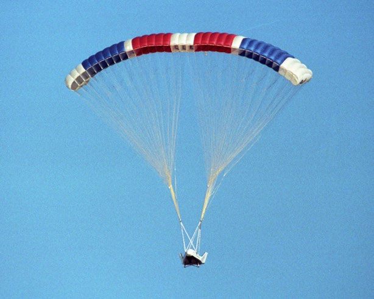
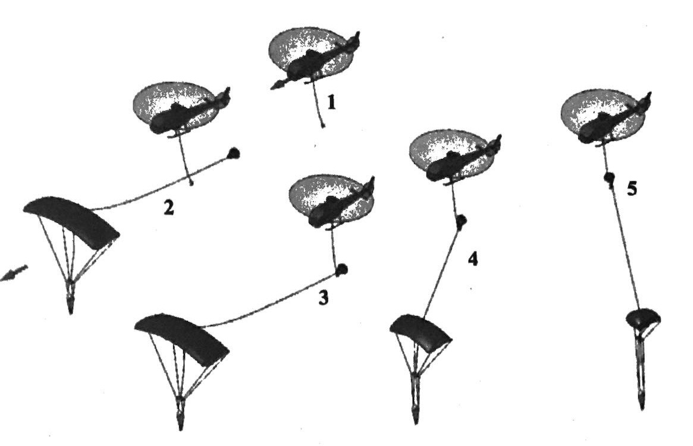

2025年度
航空機設計仕様書
2025年8月
東京理科大学創域理工学部機械航空宇宙工学科
小笠原研究室
| 7522095 | 舟木 悠太 |
1.5 .5 序論
この節では，パラフォイルの基本的な仕組みについて説明する．パラフォイルは，展開可能な柔軟構造を有し，端部の形状を変形させることで姿勢の変更及び軌道制御が可能な落下傘を指す(図(1))．

パラフォイルはキャノピー，ペイロード，そしてテザーから構成されている．パラフォイルのキャノピーは，翼型断面を有し，揚力を発生させることで滑空飛行を実現する．ペイロードは，パラフォイルに吊り下げられた物体であり，テザーはキャノピーとペイロードを接続する．
パラフォイルは前進時にキャノピーが空気を取り込み，空気流のせきとめ圧（ラム圧）でセルを膨らませて翼形状を保持する.パラフォイルは減速や降下に用いられるパラシュートと比べてアスペクト比が大きく，端面が翼型形状であるため滑空飛行が可能となる．
パラフォイルの制御は，主にテザーの端部を引くことで行われ、テザーの片端を引く非対称制御とテザーの両端を引く対称制御の2通りの制御方法を使い分ける．非対称制御では，例としてテザーの右側を引くとキャノピーの右後部が下がることでバンク角が発生し、向心力が働くことで左旋回が可能となる．対称制御では，両端のテザーを引くことでキャノピーの後縁が下がり揚抗比が変化することで前進速度を制御できる．
空中回収において，ヘリコプターとパラフォイルが安定した会合を行うため，会合時の衝撃荷重及び相対速度の低減及び空中回収に適したパラフォイルの種類の研究が行われてきた． Deanらは，3GMAR(3rd Generation Mid-Air Retrieval )という空中回収の方式を提案した．3GMARの手順は以下の通りである(図(1))．

3GMARではフックが取り付けられた回収ヘリコプターが，ドローグパラシュートが取り付けられたパラフォイルに接近し，ドローグにフックをかけて回収する．
この時の手順は接近，会合，引き上げの3段階に分けられる．接近段階では，ヘリコプターは、パラフォイルをパイロットが目視で確認できるまでパラフォイルに向かって飛行する．
その後，回収ヘリコプターはパラフォイルと右斜め編隊を組み，パラフォイルより約15m高い高度を維持し，パラフォイルの中心線の左側に約15m離れて位置する．このときヘリコプターとパラフォイルとの相対速度はほぼ0m/sとなる．
会合段階では，ヘリコプターはパラフォイルに向かって徐々に接近し，ドローグパラシュートにフックをかける．
引き上げ段階では，ヘリコプターはドローグパラシュートを引き上げる．この際，係合ラインに張力がかかり，パラフォイルのサスペンションラインに取り付けられた「スライダー」と呼ばれる部品が引き上げられキャノピーが収縮する．これにより，パラフォイルの揚力が減少し，ヘリコプターへの負荷が軽減される．
3GMARでは，パラフォイルがヘリコプターの前方を滑空するため，ヘリコプターのパイロットがパラフォイルを追跡するのが容易である上，ヘリコプターとパラフォイルの相対速度が小さいため，会合時の衝撃荷重が低減される．これにより，安全かつ効率的な空中回収が可能となる．
その一方，3GMARではパラフォイルが自律制御を行うことは想定されていないため，風などの外乱やパラフォイルの初期値のずれによりパラフォイルがヘリコプターから離れた方向に移動する可能性がある．したがって空中回収の成功は、ヘリコプターの性能及びパイロットの技術に依存している．()
Mariらは，ATLAS Vに搭載されたRD-180エンジンの空中回収を計画するにあたって，パラフォイルに自律誘導システムを導入することを検討した．ペイロードの内部にGPSを搭載することで，パラフォイル展開後にペイロードの位置情報を取得し，目標地点に向かって自律的に誘導することを目的としている． このシステムは実証されておらず，()
1.5 .5 座標系とモデルの定義 本モデルでは，ペイロードは剛体として扱うが，キャノピーは入射角 Γ（キャノピーとペイロードの相対角）を通して，システムに対してキャノピー上の回転中心を中心に回転できるものとする． 本モデルは以下の4つの座標系を持つ．
慣性座標系 (OI − XIYIZI): 原点 OI は地上の任意の点，XI 軸は北，YI 軸は東，ZI 軸は下方向とする．
機体座標系 (OB − XBYBZB): 原点 OB は全システムの質量中心，XB 軸は機体正面，XB − YB 面はシステム対称面とする．
キャノピー座標系 (OC − XCYCZC): 原点 OC はキャノピーの回転中心位置，XC 軸はキャノピー正面，XC − ZC 面はキャノピー対称面とする．
空力座標系 (OA − XAYAZA): 原点 OA はキャノピーの空力中心位置（前縁から 0.25c̄），XA 軸はキャノピー正面，XA − ZA 面はキャノピー対称面とする．
また，運動を表現するにあたりペイロードの質量中心に点 S を定義する． このシステムでは，全システムの質量中心において3つの並進運動（3DOF）と回転運動（3DOF）の合計6自由度でモデル化される．
1.5 .5 パラフォイルの運動方程式
6自由度のパラフォイルモデル運動方程式は，全システムの質量中心における3つの慣性位置成分 [x, y, z]T および3つのオイラー角 [ϕ, θ, ψ]T により，式([eq:kinematics_trans])，([eq:kinematics_rot])で表される．
$$\begin{equation} \begin{bmatrix} \dot{x} \\ \dot{y} \\ \dot{z} \end{bmatrix} = [\bm{T}_{IB}]^T \begin{bmatrix} u \\ v \\ w \end{bmatrix} \label{eq:kinematics_trans} \end{equation}$$
$$\begin{equation} \begin{bmatrix} \dot{\phi} \\ \dot{\theta} \\ \dot{\psi} \end{bmatrix} = \begin{bmatrix} 1 & \sin\phi\tan\theta & \cos\phi\tan\theta \\ 0 & \cos\phi & -\sin\phi \\ 0 & \sin\phi/\cos\theta & \cos\phi/\cos\theta \end{bmatrix} \begin{bmatrix} p \\ q \\ r \end{bmatrix} \label{eq:kinematics_rot} \end{equation}$$ ここで，sin (α) ≡ sα，cos (α) ≡ cα，tan (α) ≡ tα とする． また，[TIB] は慣性座標系から機体座標系への変換行列である．
$$\begin{equation} [\bm{T}_{IB}] = \begin{bmatrix} c_\theta c_\psi & c_\theta s_\psi & -s_\theta \\ s_\phi s_\theta c_\psi - c_\phi s_\psi & s_\phi s_\theta s_\psi + c_\phi c_\psi & s_\phi c_\theta \\ c_\phi s_\theta c_\psi + s_\phi s_\psi & c_\phi s_\theta s_\psi - s_\phi c_\psi & c_\phi c_\theta \end{bmatrix} \label{eq:matrix_tib} \end{equation}$$
非線形運動方程式は，全システム質量中心において力とモーメントを合計し，線形運動量と角運動量を定義することにより得られる．
・線形運動量 $$\begin{equation} \begin{bmatrix} \dot{u} \\ \dot{v} \\ \dot{w} \end{bmatrix} = \frac{1}{m}(\bm{F}_W + \bm{F}_A + \bm{F}_S) - \bm{S}_{\omega B} \begin{bmatrix} u \\ v \\ w \end{bmatrix} \label{eq:dynamics_trans} \end{equation}$$
・角運動量 $$\begin{equation} \begin{bmatrix} \dot{p} \\ \dot{q} \\ \dot{r} \end{bmatrix} = [\bm{I}_T]^{-1} \left\{ \bm{M}_A + \bm{S}_{CP \cdot B} \times \bm{F}_A + \bm{S}_{CS \cdot B} \times \bm{F}_S - \bm{S}_{\omega B}[\bm{I}_T] \begin{bmatrix} p \\ q \\ r \end{bmatrix} \right\} \label{eq:dynamics_rot} \end{equation}$$
ここで，SωB は機体軸における角速度のクロス積行列であり以下に示される． $$\begin{equation} \bm{S}_{\omega B} = \begin{bmatrix} 0 & -r & q \\ r & 0 & -p \\ -q & p & 0 \end{bmatrix} \label{eq:skew_omega} \end{equation}$$
また，[IT] は全システムの慣性モーメントであり，キャノピー・ペイロードの慣性モーメントを平行軸の定理（I = Icg + md2）を用いて表される（益川, 2016）．
キャノピーやペイロードで生じた力を全システム質量中心で表すために，距離ベクトル r⃗ = [rx, ry, rz]T を用いて外積で表現される．Sa ⋅ bA はクロス積行列であり，座標系 A において点 a から点 b までの距離を表す．
$$\begin{equation} \bm{S}_{a \cdot b}^A \times \bm{F} = \begin{bmatrix} 0 & -r_z & r_y \\ r_z & 0 & -r_x \\ -r_y & r_x & 0 \end{bmatrix} \begin{bmatrix} F_X \\ F_Y \\ F_Z \end{bmatrix} \label{eq:moment_cross} \end{equation}$$
1.5 .5 力の定義 式([eq:dynamics_trans])の線形運動量は，重力項 FW，キャノピーとペイロードに生じる空力項（キャノピー FA，ペイロード FS）によって定義される．重力項は式([eq:force_gravity])で表され，全システム質量中心に生じる．
$$\begin{equation} \bm{F}_W = [\bm{T}_{IB}] \begin{bmatrix} 0 \\ 0 \\ mg \end{bmatrix} \label{eq:force_gravity} \end{equation}$$
キャノピーの空力項を定義する前に，キャノピー座標系における空力速度 [uc, vc, wc]T 及び角速度 [pc, qc, rc]T をキャノピーの入射角 Γ と大気風を考慮して定義する．
$$\begin{equation} \begin{bmatrix} u_c \\ v_c \\ w_c \end{bmatrix} = [\bm{T}_{BC}] \left( \begin{bmatrix} u \\ v \\ w \end{bmatrix} + \bm{S}_{\omega B} \begin{bmatrix} \Delta x_c \\ \Delta y_c \\ \Delta z_c \end{bmatrix} + [\bm{T}_{BC}]^T \begin{bmatrix} \Delta x_p \\ \Delta y_p \\ \Delta z_p \end{bmatrix} \right) - [\bm{T}_{IB}] \begin{bmatrix} V_{WX} \\ V_{WY} \\ V_{WZ} \end{bmatrix} \label{eq:canopy_vel} \end{equation}$$
$$\begin{equation} \begin{bmatrix} p_c \\ q_c \\ r_c \end{bmatrix} = [\bm{T}_{BC}] \begin{bmatrix} p \\ q \\ r \end{bmatrix} \label{eq:canopy_ang_vel} \end{equation}$$
ここで，Δxc, Δyc, Δzc は機体座標系における質量中心からキャノピー回転中心までの距離，Δxp, Δyp, Δzp はキャノピー座標系におけるキャノピー回転中心から空力中心までの距離である． また，[TBC] は機体座標系からキャノピー座標系への変換行列である．
$$\begin{equation} [\bm{T}_{BC}] = \begin{bmatrix} \cos\Gamma & 0 & -\sin\Gamma \\ 0 & 1 & 0 \\ \sin\Gamma & 0 & \cos\Gamma \end{bmatrix} \label{eq:matrix_tbc} \end{equation}$$
キャノピー座標系における空力角は以下で定義される．キャノピーの合成空力速度は $V_C = \sqrt{u_c^2 + v_c^2 + w_c^2}$ である．
$$\begin{equation} \alpha = \tan^{-1} \left( \frac{w_c}{u_c} \right) \label{eq:alpha} \end{equation}$$ $$\begin{equation} \beta = \sin^{-1} \left( \frac{v_c}{V_C} \right) \label{eq:beta} \end{equation}$$
キャノピーに生じる空力項 FA は，キャノピーの空力座標系の原点に作用し，式([eq:force_aero])〜式([eq:coeff_cl])で表される．
$$\begin{equation} \bm{F}_A = \frac{1}{2} \rho V_C^2 S_C [\bm{T}_{BC}]^T [\bm{T}_{AC}] \begin{bmatrix} -C_D \\ C_Y \beta \\ -C_L \end{bmatrix} \label{eq:force_aero} \end{equation}$$
$$\begin{equation} C_D = C_{D0} + C_{D\alpha^2}\alpha^2 + C_{D\delta_a}\delta_a + C_{D\delta_s}\delta_s \label{eq:coeff_cd} \end{equation}$$ $$\begin{equation} C_L = C_{L0} + C_{L\alpha}\alpha + C_{L\delta_a}\delta_a + C_{L\delta_s}\delta_s \label{eq:coeff_cl} \end{equation}$$
ここで，[TAC] は空力中心からキャノピー座標系への変換行列であり，迎角 α によって定義される．
$$\begin{equation} [\bm{T}_{AC}] = \begin{bmatrix} \cos\alpha & 0 & -\sin\alpha \\ 0 & 1 & 0 \\ \sin\alpha & 0 & \cos\alpha \end{bmatrix} \label{eq:matrix_tac} \end{equation}$$
ペイロードに作用する空力項は形状抗力によって定義され，キャノピーと同様にペイロードにおいても大気風の要素を考慮した空力速度 [uS, vS, wS]T を用いる．ペイロードの合成空力速度は $V_S = \sqrt{u_S^2 + v_S^2 + w_S^2}$ である．
$$\begin{equation} \bm{F}_S = -\frac{1}{2} \rho V_S S_S C_{DS} \begin{bmatrix} u_S \\ v_S \\ w_S \end{bmatrix} \label{eq:force_payload} \end{equation}$$
$$\begin{equation} \begin{bmatrix} u_S \\ v_S \\ w_S \end{bmatrix} = \begin{bmatrix} 1 & 0 & 0 \\ 0 & 1 & 0 \\ 0 & 0 & 1 \end{bmatrix} \left( \begin{bmatrix} u \\ v \\ w \end{bmatrix} + \bm{S}_{\omega B} \begin{bmatrix} \Delta x_p \\ \Delta y_p \\ \Delta z_p \end{bmatrix}_S \right) - [\bm{T}_{IB}] \begin{bmatrix} V_{WX} \\ V_{WY} \\ V_{WZ} \end{bmatrix} \label{eq:payload_vel} \end{equation}$$ ※式([eq:payload_vel])内の Δxp 等の添字は，文脈よりペイロード位置に関する変数と推測される．
1.5 .5 モーメントの定義 式([eq:dynamics_rot])の角運動量は，質量中心に生じるモーメント MA，キャノピーとペイロードに生じる空力モーメント（キャノピー SCP ⋅ B × FA，ペイロード SCS ⋅ B × FS）によって定義される．質量中心に生じるモーメント MA は式([eq:moment_aero])で表される．
$$\begin{equation} \bm{M}_A = \frac{1}{2} \rho V_C^2 S_p [\bm{T}_{BC}]^T \begin{bmatrix} b \cdot C_l \\ c \cdot C_m \\ b \cdot C_n \end{bmatrix} \label{eq:moment_aero} \end{equation}$$
$$\begin{equation} C_l = C_{l\phi}\phi + C_{lp} \frac{p_c b}{2V_C} + C_{l\delta_a}\delta_a \frac{d}{b} \label{eq:coeff_roll} \end{equation}$$
$$\begin{equation} C_m = C_{m0} + C_{m\alpha}\alpha + C_{mq} \frac{q_c c}{2V_C} \label{eq:coeff_pitch} \end{equation}$$
$$\begin{equation} C_n = C_{nr} \frac{r_c b}{2V_C} + C_{n\delta_a}\delta_a \frac{d}{b} \label{eq:coeff_yaw} \end{equation}$$
また，操舵量に関して非対称ブレーキ δa および対称ブレーキ δs は左右の操舵量 δR, δL を用いて以下で表される．
$$\begin{equation} \delta_a = \delta_R - \delta_L \label{eq:deflection_asym} \end{equation}$$ δs = min (δR, δL)
以上を全システム中心で合計することで，式([eq:dynamics_trans])の線形運動量と([eq:dynamics_rot])の角運動量が構成される．
1 The Past, Present, and Future of Mid-Air Retrieval Dean S. Jorgensen•, Roy A. Haggardt and Glen J. Brown Vertigo, Inc., Lake Elsinore, California 92531, 18th AIM Aerodynamic DeceleratorS ystems Technology Conference and Seminar(2005) Partial Rocket Reuse Using Mid-Air Recovery Mari Gravlee*, Bernard Kutter†, Frank Zegler‡, Brooke Mosley§ United Launch Alliance Denver, CO Roy A. Haggard** Vertigo Lake Elsinore, CA, AIAA SPACE 2008 Conference & Exposition 9 - 11 September 2008, San Diego, California(2008) The National Aeronautics and Space Administration, The X-38 prototype of the Crew Return Vehicle is suspended under its giant 7,500-square-foot parafoil during its eighth free flight on Thursday, December 13, 2001, from <https://www.nasa.gov/image-detail/amf-ec01-0339-146/>, (参照日2024年1月2日)